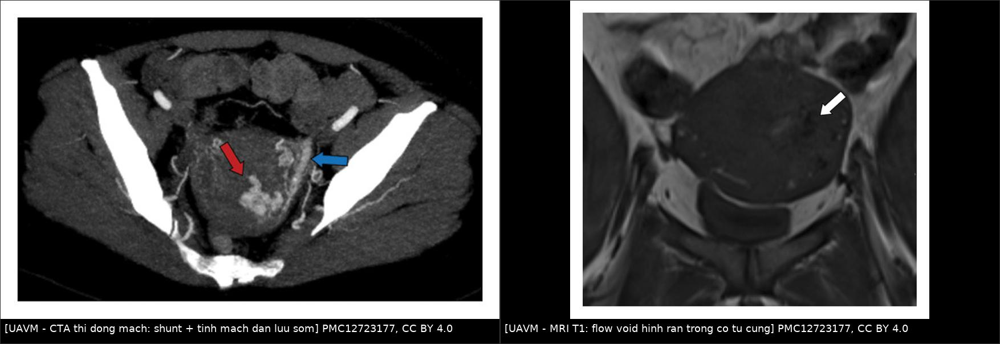
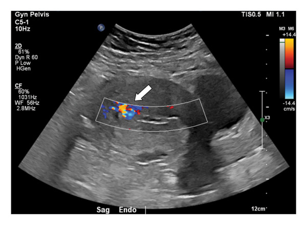
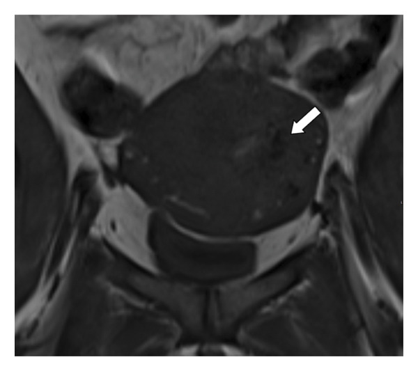
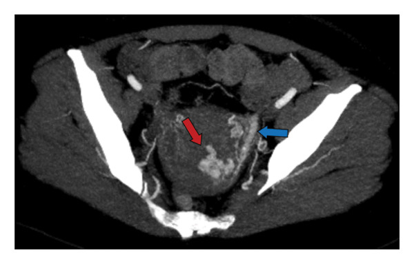
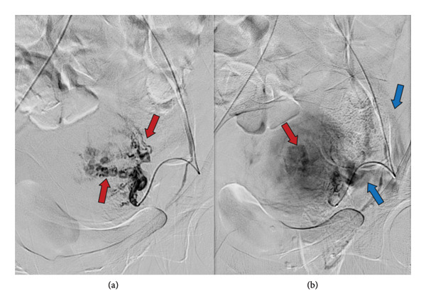

1657 — Dị dạng động–tĩnh mạch tử cung & tăng sinh mạch cơ tử cung / Uterine arteriovenous malformation and enhanced myometrial vascularity
Tags: pattern:tang-sinh-mach pattern:di-dang-dong-tinh-mach pattern:chay-mau-au-dao pattern:khoi-long-tu-cung vung:tu-cung vung:tieu-khung score:PSV-Doppler protocol:SA-Doppler protocol:CTA protocol:DSA protocol:UAE incidentaloma:EMV
Mức chắc chắn (certainty): tổng hợp y văn (literature synthesis) — 1 bài tổng quan có ngưỡng Doppler định lượng (PMC11172076), 1 loạt 5 ca + thuật toán xử trí (PMC12723177), 1 bài tổng quan về EMV sau sảy thai (PMC11626903), 1 loạt 3 ca can thiệp nội mạch (PMC11238751) và các ca nguyên văn có ảnh. Câu nào là suy luận được ghi [suy luận].
1. Tổng quan bệnh học – cơ chế hình ảnh
- Bản chất: dị dạng động–tĩnh mạch tử cung (uterine arteriovenous malformation, UAVM) là những shunt trực tiếp giữa nhánh động mạch trong cơ tử cung và đám rối tĩnh mạch cơ tử cung, không qua giường mao mạch. Có 2 loại:
- Bẩm sinh (congenital): sai biệt hóa bó mạch nguyên thủy, tổn thương lan rộng, có thể ăn thông với mạch chậu; hiếm và khó điều trị hơn.
- Mắc phải (acquired — đa số): fistula thật sau nạo/hút thai, mổ lấy thai, bóc u xơ, thai trứng, nhiễm trùng. Đây là nhóm gặp hằng ngày ở khoa sản.
- Thuật ngữ đang đổi: nhiều trường hợp sau thai kỳ chỉ là tăng sinh mạch cơ tử cung (enhanced myometrial vascularity, EMV) — mạch giãn do tái tạo sau thai — và tự thoái triển, không phải dị dạng thật. Vì vậy đọc Doppler phải phân tầng theo mức độ, không gọi tất cả là "AVM" rồi can thiệp.
- TẠI SAO Doppler là chốt: shunt động–tĩnh mạch làm sức cản ngoại vi giảm → dòng tốc độ cao, sức cản thấp, xoáy ("mosaic"/hỗn loạn màu). Định lượng (PMC11172076):
- Cơ tử cung bình thường: PSV 9–40 cm/s, RI 0,6–0,8.
- UAVM: PSV 25–110 cm/s, trung bình 60 cm/s; RI 0,27–0,75, trung bình 0,41.
- Phân độ theo PSV: nhẹ < 40 cm/s** (theo dõi) · **vừa 40–60 cm/s** (nội tiết) · **nặng > 60–70 cm/s (can thiệp mạch/mổ). PSV > 83 cm/s thường phải can thiệp.
- TẠI SAO MRI thấy "dòng trống tín hiệu": máu chảy nhanh trong mạch giãn tạo flow void trên T1/T2 spin-echo (proton đã ra khỏi lát cắt trước khi thu tín hiệu) → hình con rắn/hình xoáy tối trong cơ tử cung, ngấm thuốc mạnh thì động mạch. Trên CTA, shunt làm tĩnh mạch cản quang sớm ngay thì động mạch — dấu hiệu chốt.
- TẠI SAO nguy hiểm: shunt áp lực cao + mô cơ tử cung mỏng manh → băng huyết ồ ạt, có ca cần truyền máu tới 30% (PMC11172076). UAVM chiếm 1–2% các ca rong huyết (PMC11172076); 1–2% thai sớm có biến chứng (thai lưu, thai trứng, thai trên sẹo mổ) có bất thường mạch kiểu này (PMC11626903).
- Ngưỡng định lượng về EMV sau thai (rất quan trọng để tránh điều trị oan): tỷ lệ EMV được báo cáo 1,5–6,3%; trong một nghiên cứu tiến cứu 93 phụ nữ sau sinh đủ tháng, EMV gặp 50,5% ở ngày 3 nhưng chỉ còn 3,9% ở 6 tuần (PMC11626903) → phần lớn tự hết.
- Số liệu ca nguyên văn:
- Nữ 41 tuổi, sau nạo thai lưu 10 tuần 4 tuần vẫn ra máu không cầm; Hb 12 → 9 g/dL; siêu âm Doppler nghi AVM, MRI thấy nhiều flow void hình rắn ở thành tử cung trái và buồng tử cung; chụp mạch xác nhận nhánh xoắn nhỏ + hồi lưu tĩnh mạch sớm; nút mạch bằng hạt (particle) → cầm máu, ra viện hôm sau (PMC12723177).
- Nữ 35 tuổi, sau sinh thường có lấy nhau thủ công; ngày 27 sau sinh ra máu ồ ạt; trước đó đã bị nạo vì nghi sót nhau, chảy máu 1,2 L, phải truyền 4 đơn vị hồng cầu + 3 đơn vị huyết tương tươi — đúng kịch bản "nạo trên AVM" (PMC12723177).
- Nữ 16 tuổi được điều trị bảo tồn sinh sản thành công (PMC8457299) — UAVM không chỉ ở người đã sinh nở.
- Ca AVM + sót nhau cùng tồn tại: hình ảnh chồng lấp, cần phân biệt trước khi can thiệp (PMC12991638).
2. Mẫu hình + chẩn đoán phân biệt theo VỊ TRÍ và BỐI CẢNH (Gamut)
Mẫu hình là "khối/tổn thương trong cơ tử cung + tăng sinh mạch mạnh trên Doppler sau một biến cố sản khoa". Bối cảnh (sau nạo? sau sinh? thai trứng? chưa từng có thai?) quyết định thứ tự chẩn đoán.
- Sau nạo/hút thai hoặc sau sinh — gamut chính:
- Sót nhau (retained products of conception, RPOC) — nguyên nhân hay gặp nhất của ra máu muộn sau thai; cần lấy bỏ.
- EMV/UAVM mắc phải — tăng sinh mạch, không được nạo.
- Giả phình động mạch tử cung (uterine artery pseudoaneurysm) — túi mạch khu trú, có cổ, hình "yin–yang", thường sau mổ/nạo.
- Thai trứng/ung thư nguyên bào nuôi (GTD) — β-hCG rất cao, "bão tuyết", có thể kèm AVM.
- Nhau cài răng lược (placenta accreta spectrum) — rau bám sâu, mạch tăng sinh, sau sinh chảy máu.
- Rách cổ tử cung/âm đạo, đảo ngược tử cung, rối loạn đông máu — nguyên nhân ngoài tử cung.
- Chưa từng có thai: nghĩ AVM bẩm sinh, u mạch máu, sarcoma tử cung, giãn tĩnh mạch tiểu khung.
- Theo vị trí tổn thương:
- Trong buồng tử cung (intracavitary): RPOC, thai trứng, polyp mạch máu — nội soi buồng tử cung vừa chẩn đoán vừa điều trị.
- Trong cơ tử cung (myometrial): UAVM, giả phình, sarcoma — can thiệp mạch ưu tiên.
- Dưới thanh mạc/đoạn eo: giả phình sau mổ lấy thai, thai ở sẹo mổ.
- Gợi nhớ 3 câu hỏi: (1) Có thai/biến cố sản khoa gần đây không? (2) β-hCG bao nhiêu? (3) PSV/RI trên Doppler là bao nhiêu? — trả lời 3 câu này là ra hướng xử trí.
3. Bảng so sánh phân biệt (ma trận đối chiếu)
| Thực thể (entity) | Hình ảnh điển hình (SA/CTA/MRI) | Chốt vào (rule-in) | Chốt loại (rule-out) | Gợi ý xác nhận |
|---|---|---|---|---|
| Sót nhau (RPOC) | Khối trong buồng tử cung, hồi âm hỗn hợp, chân mạch từ cơ tử cung đi vào khối, PSV thường thấp hơn AVM | Khối trong buồng tử cung + mạch nuôi rõ từ cơ + β-hCG thấp/giảm | Không thấy khối trong buồng, chỉ có mạch trong cơ → không phải RPOC | SA đầu dò âm đạo + Doppler; nội soi buồng tử cung |
| UAVM/EMV | Vùng hỗn loạn màu trong cơ tử cung, nhiều mạch xoắn; PSV 25–110 cm/s, RI 0,27–0,75; MRI flow void; CTA hồi lưu tĩnh mạch sớm | PSV > 60–70 cm/s + RI thấp + hồi lưu tĩnh mạch sớm | Không có shunt: phổ Doppler sức cản bình thường (RI 0,6–0,8) → không phải AVM | Doppler xung; CTA/MRI; DSA khi định can thiệp |
| Giả phình động mạch tử cung | Túi mạch khu trú, có cổ, hình "yin–yang", không có đám rối mạch lan tỏa | Túi + cổ rõ + dòng xoáy trong túi | Mạng mạch xoắn lan tỏa không có túi → nghĩ AVM | CTA lát mỏng; DSA |
| Thai trứng/GTD | Buồng tử cung "bão tuyết", nang nhỏ nhiều; mạch tăng sinh; có thể di căn phổi | β-hCG rất cao + hình bão tuyết + nang hoàng thể hai bên | β-hCG âm/thấp → không phải GTD | β-hCG, siêu âm, X-quang ngực |
| Nhau cài răng lược (PAS) | Rau bám sâu, mất lớp sáng, mạch xuyên qua cơ tử cung, bánh nhau dày | Mất lớp sáng + mạch xuyên + tiền sử mổ lấy thai | Rau bám bình thường, không xuyên cơ → không phải PAS | MRI tiểu khung; siêu âm Doppler |
| Sarcoma tử cung | Khối đặc lớn, hoại tử, ngấm thuốc không đều, không có shunt sớm | Khối đặc có hoại tử + không hồi lưu tĩnh mạch sớm | Chỉ có mạch giãn, không có khối đặc → không phải sarcoma | MRI có tiêm; sinh thiết/mổ |
| Giãn tĩnh mạch tiểu khung | Nhiều cấu trúc ống giãn hai bên, giảm khi nằm, tăng khi đứng/rặn | Giãn hai bên + thay đổi theo tư thế + không có PSV cao | Mạch một bên, PSV cao, có shunt → nghĩ AVM | SA tư thế; MRI; CTA thì muộn |

Trái: CTA thì động mạch (MIP axial) — đám mạch xoắn tăng ngấm ở thành tử cung trái (mũi tên đỏ) với tĩnh mạch dẫn lưu cản quang sớm (mũi tên xanh). Phải: MRI T1 coronal — nhiều flow void hình rắn trong cơ tử cung và buồng tử cung (mũi tên trắng). Nguồn: PMC12723177, Fig. 5 và Fig. 2 (CC BY 4.0), ảnh ghép letterbox giữ nguyên tỷ lệ.4. Protocol chụp + ngưỡng xử trí
4.1 Chụp gì, theo thứ tự nào
- Siêu âm đầu dò âm đạo + Doppler màu + Doppler xung — bước đầu tiên, luôn làm trước mọi nạo khi ra máu muộn sau thai:
- Đo kích thước tổn thương, ghi PSV (cm/s), RI, có/không có tĩnh mạch dẫn lưu sớm.
- Đặt cửa sổ Doppler nhỏ, góc Doppler ≤ 60°, chỉnh PRF thấp để không "răng cưa" giả; đo 3 lần lấy cao nhất.
- β-hCG song song — loại trừ GTD/thai còn tiếp diễn.
- CTA tiểu khung (nếu chẩn đoán chưa rõ, bệnh nhân không ổn định, hoặc chuẩn bị can thiệp): tìm hồi lưu tĩnh mạch sớm và bản đồ động mạch nuôi (tử cung, buồng trứng, mạch chậu trong).
- MRI tiểu khung (T2, T1, T1 fat-sat sau tiêm): phân biệt AVM với RPOC/GTD/sarcoma, thấy flow void, đánh giá lan vào cơ và tạng lân cận; hữu ích khi mang thai lại sau điều trị.
- DSA — không làm chỉ để "xem cho biết": chỉ định khi định điều trị nội mạch (nút mạch). DSA là chuẩn vàng: thấy nhánh xoắn + hồi lưu tĩnh mạch sớm.
4.2 Ngưỡng và lựa chọn điều trị
- Theo dõi (expectant): tổn thương nhỏ, PSV < 40 cm/s, bệnh nhân ổn định, không thiếu máu. Hợp lý vì EMV tự thoái triển (50,5% ngày 3 → 3,9% ở 6 tuần). Hẹn Doppler lại 1–2 tuần; dặn tránh giao hợp, tránh thụ thai trong thời gian theo dõi.
- Nội tiết: norethisterone làm ngừng chảy máu và giảm tổn thương ở 90% ca; thuốc tránh thai phối hợp hoặc GnRHa dùng cầm máu/tạm thời. Nhóm PSV 40–60 cm/s là nhóm hợp lý nhất cho nội tiết.
- Nút mạch tử cung (uterine artery embolization, UAE): lựa chọn đầu cho PSV > 60–70 cm/s, chảy máu nặng, huyết động chưa ổn định mà còn mong con. Tỷ lệ thành công 71–93% (có thể phải nút lại); ưu tiên nút siêu chọn lọc/giảm lưu lượng để giữ tưới máu tử cung.
- Nội soi buồng tử cung (hysteroscopy): hiệu quả khi tổn thương trong buồng tử cung (RPOC, AVM dạng khối nội mạc); đốt/cắt bằng điện lưỡng cực. Tỷ lệ có thai sau điều trị bằng nội soi được báo cáo tới 55%, cao hơn sau UAE.
- Cắt tử cung: biện pháp cuối — chảy máu không kiểm soát, đã hết mong con, hoặc AVM bẩm sinh lan rộng không thể nút.
- Sau UAE: có thai 17,4% (nghiên cứu quan sát) đến 27% (ca báo cáo); thai kỳ cần theo dõi vì nguy cơ nhau bám bất thường/sinh non [suy luận từ cơ chế giảm tưới máu].
- Tuyệt đối không nạo khi chưa loại trừ AVM: ca PMC12723177 đã mất 1,2 L máu và cần 4 đơn vị hồng cầu vì nạo trên tổn thương mạch.
4.3 Sơ đồ quyết định
flowchart TD
A[Ra máu âm đạo muộn sau thai/nạo] --> B[SA đầu dò âm đạo + Doppler xung + beta-hCG]
B --> C{Co khoi trong buong tu cung?}
C -->|Co, mach nuoi tu co| D[Song sot nhau: noi soi lay bo, khong nao mu]
C -->|Khong, mach xoan trong co| E{PSV va huyet dong}
E -->|PSV duoi 40 va on dinh| F[Theo doi 1-2 tuan, tranh thu thai]
E -->|PSV 40-60| G[Noi tiet: norethisterone/GnRHa]
E -->|PSV tren 60-70 hoac dang chay mau| H[CTA hoac MRI de lap ke hoach]
H --> I[UAE sieu chon loc]
I --> J[That bai hoac AVM lan rong: nho lai, noi soi, cat tu cung]
G --> K[Doppler lai sau 2-4 tuan]
F --> K
K --> L{Con shunt?}
L -->|Khong| M[Theo doi den het]
L -->|Co| E
5. Biến thể bình thường và cạm bẫy
- Gọi mọi tăng sinh mạch là "AVM" → điều trị oan. EMV sau sinh gặp 50,5% ở ngày 3 và chỉ còn 3,9% ở 6 tuần; nếu bệnh nhân ổn định, chờ + Doppler lại là xử trí đúng. Chỉ can thiệp khi PSV cao, chảy máu nặng hoặc thiếu máu tiến triển.
- AVM và sót nhau có thể cùng tồn tại (PMC12991638): thấy khối trong buồng tử cung không loại trừ AVM, và ngược lại. Luôn đo Doppler trước khi quyết định nạo.
- Nạo trên AVM = thảm họa: ca 35 tuổi chảy 1,2 L, truyền 4 đơn vị hồng cầu + 3 đơn vị huyết tương; nếu nghi ngờ, nội soi có dao lưỡng cực và có can thiệp mạch dự phòng thay vì nạo mù.
- Giả phình ≠ AVM: giả phình có cổ và túi khu trú, điều trị bằng coil/nút chọn lọc; nút cả hai động mạch tử cung cho giả phình nhỏ là quá tay. Ngược lại, AVM là mạng mạch lan tỏa nên nút phải phủ ổ shunt.
- PSV thấp không loại trừ AVM ở bệnh nhân đang sốc/tụt áp (dòng chảy giảm); và PSV cao giả nếu góc Doppler sai hoặc cửa sổ đặt vào nhánh mạch lớn bình thường. Đo lại khi bệnh nhân ổn định.
- "Bão tuyết" + mạch mạnh: nghĩ thai trứng trước AVM; β-hCG là chốt, và GTD có phác đồ hóa trị riêng — nút mạch chỉ để cầm máu.
- Cạm bẫy mặt cắt: trên CTA axial, tĩnh mạch dẫn lưu sớm có thể bị đọc là "động mạch thứ hai"; phải so thì động mạch với thì tĩnh mạch, và dùng MIP/coronal để thấy rõ hướng dòng. Trên MRI, flow void có thể bị nhầm với khí hoặc vôi hóa — đối chiếu T1/T2 và ảnh có tiêm.
6. Tự lượng giá — Blind Quiz
Ca 1 — Nữ 41 tuổi, ra máu không cầm 4 tuần sau nạo thai lưu 10 tuần; Hb 12 → 9 g/dL. Siêu âm Doppler trước tiên.

- Câu hỏi: (1) Mô tả vùng tăng sinh mạch. (2) Ba chẩn đoán phân biệt? (3) Vì sao không được nạo? (4) Bước tiếp theo?
Bấm để hiện đáp án (findings + chẩn đoán)
- Dấu hiệu: vùng hỗn loạn màu (mosaic) trong cơ tử cung/buồng tử cung (mũi tên trắng), nhiều nhánh mạch xoắn — nghi UAVM hoặc RPOC tăng sinh mạch.
- Ba phân biệt: RPOC, UAVM/EMV, giả phình động mạch tử cung (thêm GTD nếu β-hCG cao).
- Vì sao không nạo: nạo trên shunt áp lực cao gây băng huyết ồ ạt, có thể phải cắt tử cung cấp cứu.
- Bước tiếp theo: đo PSV/RI; MRI để xác nhận flow void; nếu PSV cao/chảy máu tiếp → DSA + nút mạch. Ca này MRI thấy flow void hình rắn, DSA xác nhận và nút bằng hạt → cầm máu, ra viện hôm sau.
- Nguồn: PMC12723177, Fig. 1 (CC BY 4.0).
Ca 1 (tiếp) — MRI xác nhận trước khi can thiệp.

- Câu hỏi: Cấu trúc tối hình rắn trong cơ tử cung là gì? Vì sao nó tối trên T1?
Bấm để hiện đáp án
- Nhiều flow void hình rắn ở thành tử cung trái, buồng tử cung và cạnh tử cung (mũi tên) — tương ứng mạng mạch của UAVM.
- Vì sao tối: máu chảy tốc độ cao ra khỏi lát cắt giữa lúc kích thích và lúc thu tín hiệu (hiệu ứng bay hơi/thời gian lưu) → không có tín hiệu; đây là dấu hiệu dòng chảy nhanh, không phải khí/vôi.
- Nguồn: PMC12723177, Fig. 2 (CC BY 4.0).
Ca 2 — Nữ 35 tuổi, ngày 27 sau sinh, ra máu ồ ạt; trước đó đã nạo vì nghi sót nhau và mất 1,2 L máu.

- Câu hỏi: (1) Dấu hiệu chốt trên CTA? (2) Vì sao phải nhìn thì tĩnh mạch? (3) Xử trí?
Bấm để hiện đáp án (findings + chẩn đoán)
- Dấu hiệu chốt: đám nhánh động mạch tử cung trái tăng ngấm, xoắn (mũi tên đỏ) với tĩnh mạch dẫn lưu cản quang sớm (mũi tên xanh) — shunt động–tĩnh mạch.
- Vì sao nhìn thì tĩnh mạch: bình thường tĩnh mạch chỉ ngấm ở thì muộn; ngấm sớm ngay thì động mạch chứng minh có shunt (máu đi tắt qua giường mao mạch).
- Xử trí: huyết động ổn định → UAE (nút mạch tử cung) ± nội tiết; theo dõi Hb; tránh nạo lần nữa.
- Nguồn: PMC12723177, Fig. 5 (CC BY 4.0).
Ca 3 — Cùng bệnh nhân ca 1: hình chụp mạch trước và sau nút.

- Câu hỏi: Mũi tên đỏ và mũi tên xanh chỉ gì? Vì sao DSA vừa là chuẩn vàng vừa là điều trị?
Bấm để hiện đáp án
- Đỏ: các nhánh xoắn nhỏ xuất phát từ động mạch tử cung; xanh: hồi lưu tĩnh mạch sớm — xác nhận shunt.
- DSA vừa chẩn đoán vừa điều trị: qua cùng catheter, đưa hạt/keo/coil bít ổ shunt; ca này nút bằng hạt, cầm máu ngay và ra viện hôm sau.
- Nguồn: PMC12723177, Fig. 3 (CC BY 4.0).
Bài liên quan chéo
- 1624 – Polyp nhau & khối trong buồng tử cung sau sinh/sảy: hCG âm không loại trừ, mạch 0–3+ & UAE trước TCR
- 1604 – Thai kỳ sau điều trị chửa ở sẹo mổ lấy thai
- 1640 – Xoắn tử cung trong thai kỳ
- 1634 – Hẹp cổ tử cung, ứ máu sau xạ
- 920 – Nút mạch cầm máu: thoát hoạt tính vs giả phình
- 550 – Thai sớm: SRU, ngoài tử cung & vòng lửa
- 1661 – Lạc nội mạc tử cung niệu quản
Không dùng để chẩn đoán độc lập khi chưa có người hướng dẫn.